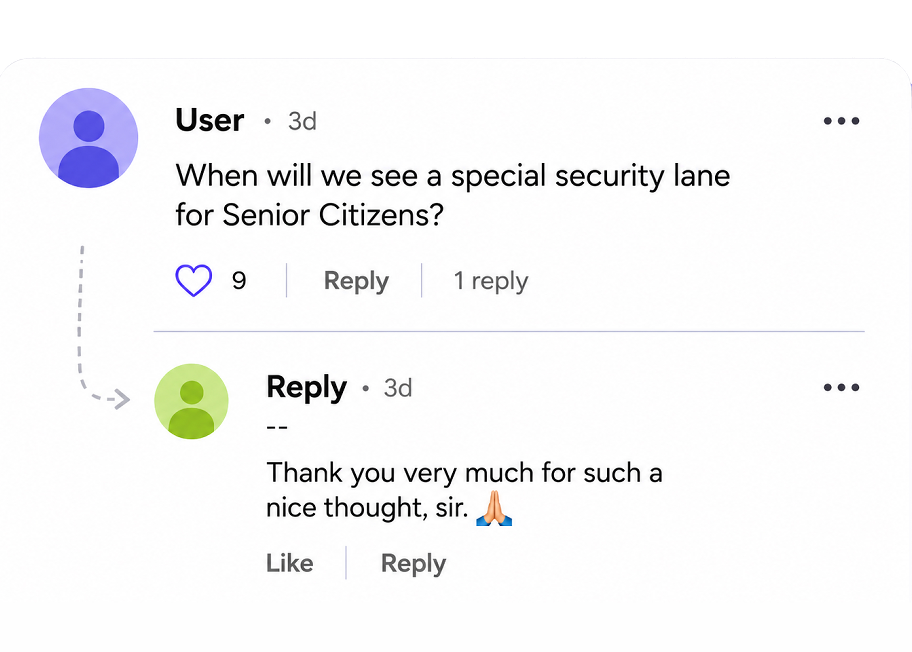
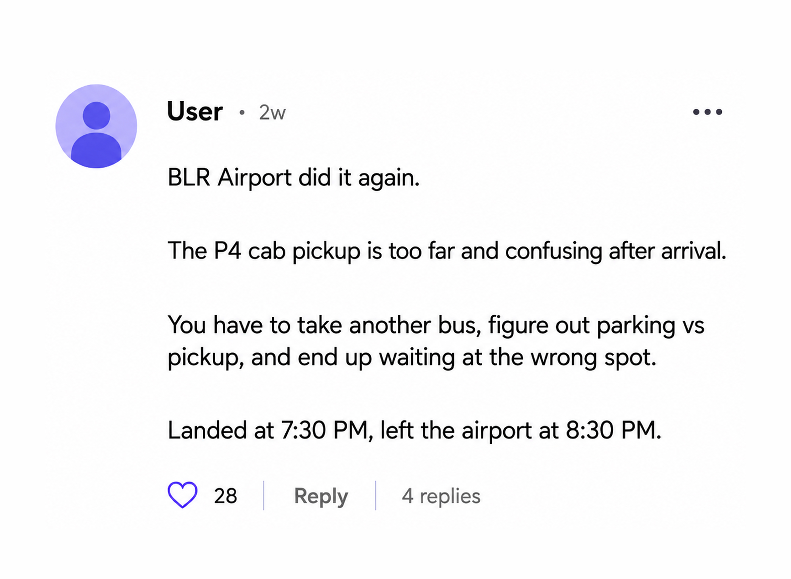
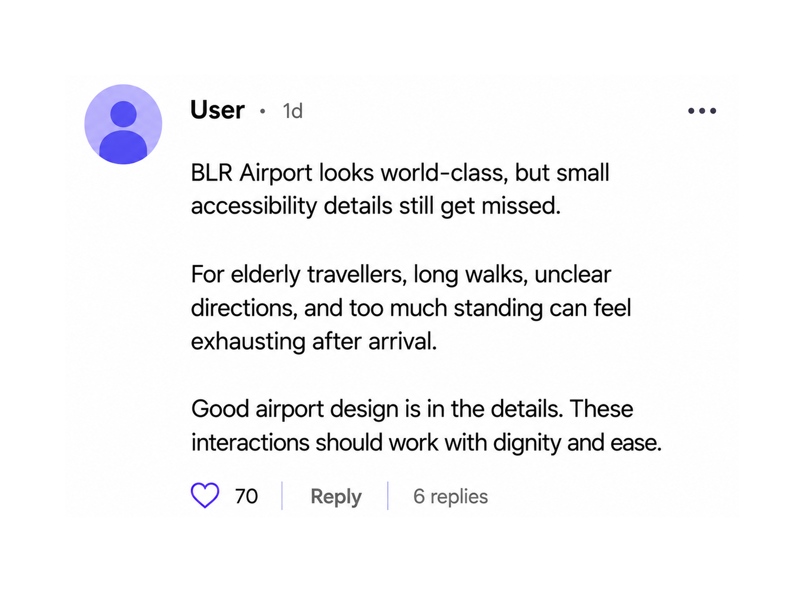

Public Signals
The Problem.
This case study begins from public discussions around priority support, elderly traveller concerns, pickup friction, and clearer airport movement.
Insights were drawn from LinkedIn, keeping all identities anonymous.

A direct public request for a visible senior-friendly pathway on a trending BIAL post.

Arrival, pickup, and last-mile movement continue to be high-friction moments for elderly travellers.

Passengers are calling for better-designed experiences that feel easier, clearer, and more dignified.